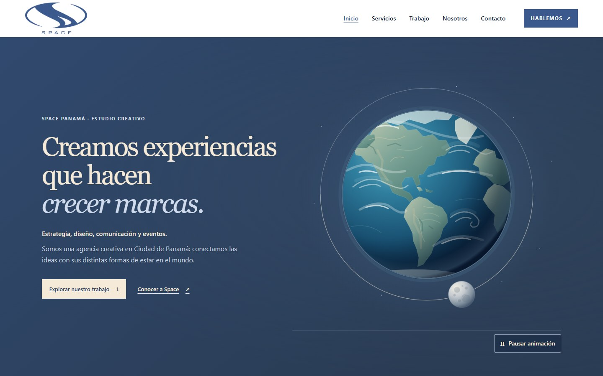
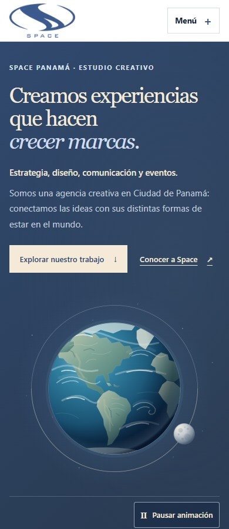
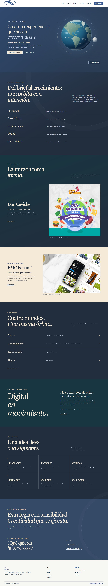
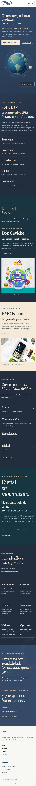

Home · edición editorial
La misma composición, con menos ruido: sin leyenda técnica, etiqueta de apertura ni números decorativos. Solo Método conserva numeración, porque explica un proceso real. La ilustración, el logo, los CTA y los textos de fondo se mantienen.
Abrir vista previa local y probar la animación ↗ · Ver alcance y verificaciones
El control cambia entre Pausar animación y Reanudar animación. Las capturas son reales y actuales; no sustituyen la vista en movimiento.


Ver la Home completa en escritorio y móvil

